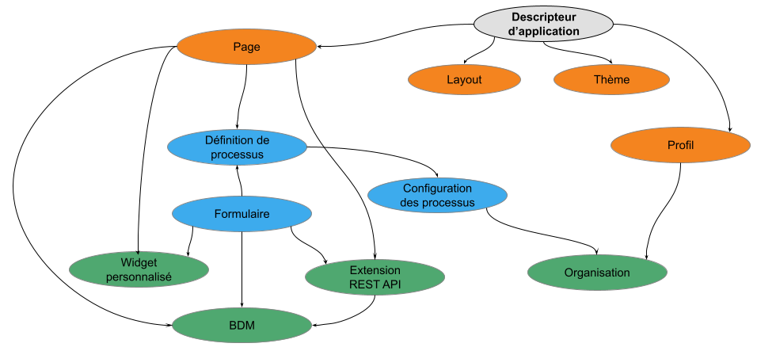

Jour 2
Delphine Coille
Rappel du programme
Jour 1 - Tout pour créer une première application
- La solution Bonita et les composants de Bonita
- Démarrer un projet Bonita
- Modélisation de processus
- Gestion des données
- Les formulaires de processus
- Gestion des utilisateurs
- Connecteurs
- Applications
Programme
Jour 2 - Pour aller plus loin dans le développement
- L'architecture de la solution Bonita
- Modélisation et automatisation
- Les données - utilisation avancée
- Les extensions
- L'interface utilisateur
- Déploiement
Applications basées sur le BPM
Combiner différents processus ensemble dans le but de fournir une application métier riche et cohérente
Les applications sont déployées et restituées par le Portail Bonita
Interfaces entre les artefacts d'une application
2 types de déploiement des applications
Déploiement dans un environnement LOCAL depuis le Studio pour des tests
Déploiement dans un environnement de DEV, QUALIFICATION ou PRODUCTION depuis le Portail
Déployer depuis Bonita Studio
Le descripteur d'application permet de définir la structure de l'application :
- Formulaires
- Pages
- Layout
- Thèmes
Etapes de déploiement sur le serveur :
- Organisation puis profils
- API extensions puis pages, layout et thèmes
- Business data model puis processus
- Définition de l'application

Exercice 6
Créer une application de gestion des congés.
Déploiement de processus
Étapes principales du déploiement d'un processus :
| 1. Configuration du processus 2. Génération du fichier Bar |
Studio |
| 3. Déploiement du fichier Bar 4. Configuration du processus 5. Activation du processus |
Portal |
Merci pour votre attention
Des questions ?
N'hésitez pas à la poser tout d'abord sur le serveur Discord dédié # bonita-camp-français,
Et vous pourrez ensuite poser toutes vos questions sur la communauté Bonitasoft.
Ressources complémentaires
- Documentation - documentation.bonitasoft.com
- Site corporate - fr.bonitasoft.com
- Communauté - community.bonitasoft.com
- GitHub - github.com/bonitasoft